Race screen — 2026-09-22 · updated 15:22
M2 P&L −£6.001 won, 3 lost · 17 to run · 1 non-runner
£2 per M2 priced 3.5–8 at the off (BSP; SP until BSP comes in next morning) · loser −£2 · winner £2 × (BSP − 1) less 5% commission · 1 winner not yet counted — BSP comes in tomorrow morning
Order: each race is in market order (shortest forecast price first). A gold
◆ 1/2/3 marks your data model's top 3 — a gold pick at a
longer price is where your data disagrees with the market (a value spot for your eye).
Badges by the name: M2 Market #2 — 2nd favourite in the morning forecast, qualifying race; back only if the live price is 3.5–8.0 ★ EYE finished last run strongly (+score) ⚠ hard trk easy→hard track step-up (−score) ▼ easy trk recently placed at much tougher track (+score) ⚠ draw badly drawn here (−score) ⚠ pace run-style fights the course pace bias (−score) ⚠ ground has tried this going but never placed on it (−score) ▼ cls dropping in class today (+score) ▲ cls rising in class today (−score) ▼ in money in vs opening show ▲ drift drifting vs opening show ⚠ 2 runs / IRE form too little / foreign form to read.
OR column: ↑ green arrow = BHA rating rising (improving horse); ↓ orange = rating falling. TF column: Timeform stars 1–5 (★★★★★ = top rated).
Suit column: going✓ / trip✓ / trk✓ (track toughness) / draw✓ (well drawn).
Rest: green Crse = won there; yellow comment = trouble in running; greyed = novice/bumper or non-handicap 5–6f sprint (left out of the tally — handicap sprints now shown at full opacity). Res fills in after racing (winner green; ✓ = winner came from the top-3 market rows, ◆ = one of your gold data picks won); Spd is a rough home figure; BSP fills in the next morning.
Badges by the name: M2 Market #2 — 2nd favourite in the morning forecast, qualifying race; back only if the live price is 3.5–8.0 ★ EYE finished last run strongly (+score) ⚠ hard trk easy→hard track step-up (−score) ▼ easy trk recently placed at much tougher track (+score) ⚠ draw badly drawn here (−score) ⚠ pace run-style fights the course pace bias (−score) ⚠ ground has tried this going but never placed on it (−score) ▼ cls dropping in class today (+score) ▲ cls rising in class today (−score) ▼ in money in vs opening show ▲ drift drifting vs opening show ⚠ 2 runs / IRE form too little / foreign form to read.
OR column: ↑ green arrow = BHA rating rising (improving horse); ↓ orange = rating falling. TF column: Timeform stars 1–5 (★★★★★ = top rated).
Suit column: going✓ / trip✓ / trk✓ (track toughness) / draw✓ (well drawn).
Rest: green Crse = won there; yellow comment = trouble in running; greyed = novice/bumper or non-handicap 5–6f sprint (left out of the tally — handicap sprints now shown at full opacity). Res fills in after racing (winner green; ✓ = winner came from the top-3 market rows, ◆ = one of your gold data picks won); Spd is a rough home figure; BSP fills in the next morning.
Winner in the market top 3: 3/20 (15%) · in your gold data top 3: 2/20 (10%) — greyed novice / sprint races excluded
| Res | Horse | Price | BSP | Dr | Form | Crse | Suit | OR | Spd | TF | Last comment |
|---|---|---|---|---|---|---|---|---|---|---|---|
| 1 | 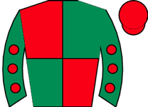 Snooker McCrew ◆ 1 ★ EYE | 3.50 | - | 4 | 1-7-5-6-6-1 | 47 ↓ | 92 | ★★★★★ | Led, pushed along and pressed 2f out, headed well over 1f out, rallied and regained lead f | ||
| 7 | 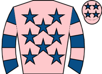 Star Suepreme ◆ 2 M2 ★ EYE | 4.00 | - | 5 | 4-11-5-9-1 | 1r 1W | trk✓ | 47 | 84 | ★★★☆☆ | In touch with leaders, pushed along over 1f out, led inside final furlong, ran on well, al |
| 3 | 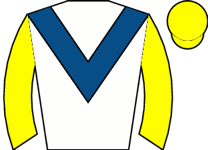 Tiberio Force ★ EYE | 6.00 | - | 8 | 6-6-7-8-9-1 | trip✓ | 52 ↓ | 87 | ★★★★☆ | Midfield, waiting for room in behind leaders over 2f out, squeezed through rivals and made | |
| 9 | Dash Of Class | 8.50 | - | 6 | 3-5-3-2-6-7 | trip✓ trk✓ | 50 | 76 | ★★★☆☆ | Dwelt, chased leaders, pushed along well over 3f out, soon weakened | |
| 0 | 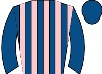 Dandy's Angel ◆ 3 | 9.00 | - | 12 | 12-3-6-6-2-6 | 2r | 47 | 94 | Prominent, ridden over 3f out, weakened over 2f out | ||
| 2 | 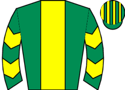 Quirke On Parole | 9.00 | - | 10 | 9-7-3-9-3-10 | 1r | trk✓ | 47 ↓ | 78 | ★★☆☆☆ | Prominent, nudged along over 3f out, ridden and weakened over 1f out |
| 10 | 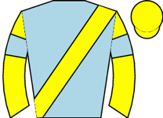 Golden Samba | 11.00 | - | 11 | 4-3-7-6-4-7 | 1r | 45 | 82 | ★★★☆☆ | Wore hood to start, towards rear, taken towards centre over 1f out, ridden and some headwa | |
| 4 | Lightning Galaxy ⚠ ground ▼ cls | 13.00 | - | 3 | 9-5-9-4-8-6 | 50 ↓ | 88 | ★★☆☆☆ | Led, headed over 1f out, soon weakened | ||
| 5 | 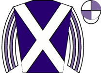 Caledonian Dream ⚠ ground | 15.00 | - | 13 | 6-7-2-11-10-6 | 2r 1p | trip✓ trk✓ | 45 | 83 | ★★☆☆☆ | Midfield, ridden and headway over 2f out, kept on same pace inside final furlong, no extra |
| 12 | 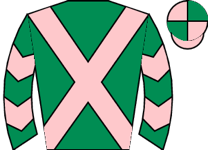 Twin And Tonic | 34.00 | - | 7 | 11-9-4-8 | 45 | 73 | ★☆☆☆☆ | Slowly away, raced in last, detached after 2f, always behind | ||
| 8 | Captain Bruce | 51.00 | - | 2 | 9-12-9-8-8-6 | 1r | 45 ↓ | 86 | ★★☆☆☆ | Towards rear, never a factor | |
| 6 | 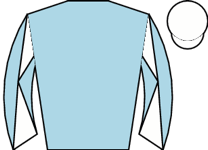 Furrst Lady | 51.00 | - | 9 | 7-10-8-9-9-8 | 1r | 45 | 87 | ★☆☆☆☆ | Took keen hold, midfield, ridden over 2f out, kept on same pace final furlong | |
| 11 | 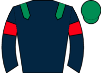 Soham's Roger | 67.00 | - | 1 | 10-7-4-12-9 | 47 | 85 | ★☆☆☆☆ | Took keen hold, midfield, chased winner 4f out, ridden and weakened 2f out |
⚠ limited form — likely skip
| Res | Horse | Price | BSP | Dr | Form | Crse | Suit | OR | Spd | TF | Last comment |
|---|---|---|---|---|---|---|---|---|---|---|---|
| 2 |  Arthurian ◆ 2 ▼ cls Arthurian ◆ 2 ▼ cls | 1.44 | - | 2 | 6-2-3 | trip✓ | 96 | 89 | ★★★★★ | Held up towards rear, pushed along to make headway over 2f out, took third and chased lead | |
| 1 |  Bayraktar ◆ 1 ▼ cls Bayraktar ◆ 1 ▼ cls | 3.50 | - | 3 | 2 | 96 | Dwelt, in rear, closed steadily 3f out and pushed along, ridden over 1f out, stayed on to | ||||
| 4 |  Austin ◆ 3 Austin ◆ 3 | 17.00 | - | 4 | 8 | 86 | Started slowly and lost many lengths start, in rear, caught up before halfway, travelled w | ||||
| 3 | 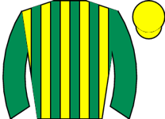 Stellar Quest ⚠ ground ▲ cls | 21.00 | - | 1 | 9 | 85 | Towards rear, pushed along 2f out, no response |
⚠ limited form — likely skip | 5f–6f sprint (non-handicap) — judge live
| Res | Horse | Price | BSP | Dr | Form | Crse | Suit | OR | Spd | TF | Last comment |
|---|---|---|---|---|---|---|---|---|---|---|---|
| 1 | 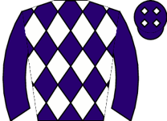 Call Me Tomorrow ◆ 2 ▼ cls | 2.50 | - | 5 | 2-5-2-5-15 | going✓ trip✓ trk✓ | 78 | 93 | ★★★★★ | Raced centre, prominent, ridden 2f out, soon weakened | |
| 2 |  Star People ◆ 1 Star People ◆ 1 | 3.00 | - | 9 | 5-2-3-2-2-2 | trip✓ trk✓ | 77 ↑ | 98 | ★★★★☆ | Slowly into stride, held up in touch on inner, travelling well 2f out, pushed along in 3rd | |
| 3 | 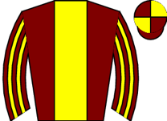 Muve On ★ EYE ▼ cls | 8.00 | - | 6 | 5 | 91 | Ran green, slowly away, in rear, headway over 2f out, pushed along over 1f out, stayed on | ||||
| 4 | 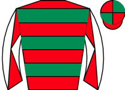 Get On That Baby ◆ 3 ▼ cls | 9.00 | - | 7 | 4 | 1r | 96 | Wore red hood to post, chased leaders, pushed along 2f out, stayed on one pace | |||
| 10 |  Howard's Hobby Howard's Hobby | 15.00 | - | 12 | unraced | - | |||||
| 6 |  Perryston Perryston | 15.00 | - | 1 | 10 | 1r | 86 | Slowly away, always behind | |||
| 7 | 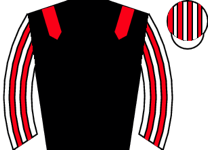 Taj Mahal Palace ▼ cls | 26.00 | - | 13 | 7-5 | 1r | 87 | Wore hood to start, in touch with leaders, pushed along over 1f out, soon outpaced, weaken | |||
| 13 |  Walt ▼ cls Walt ▼ cls | 34.00 | - | 11 | 5-5 | 89 | Towards rear, pulled hard early, became unbalanced and bumped rival when short of room on | ||||
| 5 | 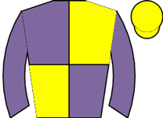 Ardad Apollo | 34.00 | - | 8 | unraced | - | |||||
| 8 | Striking Force ▼ cls | 51.00 | - | 4 | 8-9 | 87 | Prominent, raced wide and pushed over 3f out, outpaced over 2f out, weakened approaching f | ||||
| 9 | Rum Point ▼ cls | 51.00 | - | 3 | 11-7 | 88 | Towards rear, pushed along over 3f out, ridden over 2f out, moderate late headway, never n | ||||
| 11 | 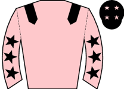 Regal Adventure ⚠ ground ▼ cls | 67.00 | - | 10 | 7-6 | 88 | Midfield, ridden over 2f out, no response, never competitive | ||||
| 12 | 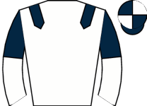 Dreamawhile ▼ cls | 101.00 | - | 2 | 9 | 1r | 80 | Held up in rear, always outpaced, detached inside final furlong |
⚠ 5f–6f sprint (non-handicap) — judge live
| Res | Horse | Price | BSP | Dr | Form | Crse | Suit | OR | Spd | TF | Last comment |
|---|---|---|---|---|---|---|---|---|---|---|---|
| 4 |  Jakajaro ◆ 2 ▼ cls Jakajaro ◆ 2 ▼ cls | 2.00 | - | 6 | 1-4-5-3-11-8 | going✓ trip✓ | 108 | 97 | ★★★★☆ | Tracked leaders, pushed along in 3rd 2f out, ridden in 2nd 1f out, weakened final furlong | |
| 0 |  Jm Jungle ◆ 1 ▼ cls Jm Jungle ◆ 1 ▼ cls | 2.38 | - | 2 | 11-3-5-7-1-5 | 1r 1W | trip✓ trk✓ | 108 | 100 | ★★★★★ | Tracked leaders, ridden in 4th 2f out, kept on one pace final furlong |
| 3 |  Ain't Nobody ⚠ ground ▼ cls Ain't Nobody ⚠ ground ▼ cls | 4.50 | - | 1 | 7-14-9-15-13-7 | 1r | 99 ↓ | 95 | ★★★☆☆ | Tracked leaders, slightly checked before halfway, pushed along over 2f out and weakened | |
| 1 | 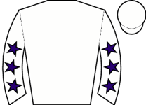 Toca Madera ⚠ ground | 7.00 | - | 3 | 4-5-3-16-2-12 | trip✓ | 94 | 98 | ★★★☆☆ | Close up far side group, led over 2f out, headed and carried right over 1f out, weakened i | |
| 6 | 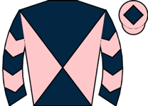 Wor Faayth ◆ 3 | 8.50 | - | 7 | 3-1-1-8-6 | going✓ trip✓ | 91 | 93 | ★★☆☆☆ | ||
| 2 | Badri ⚠ ground | 8.50 | - | 4 | 1-1-13-2-3-17 | 1r 1p | trip✓ trk✓ | 99 ↑ | 96 | ★★★☆☆ | Went early to post, went left leaving stalls, midfield near side group, ridden when groups |
| 5 | 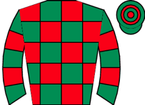 Opal Storm ★ EYE ▲ cls | 67.00 | - | 5 | 1-8-9-4-6-1 | 3r 1W | trip✓ trk✓ | 54 | 95 | ★☆☆☆☆ | Raced near side, midfield, not clear run 2f out, ridden and headway entering final furlong |
| Res | Horse | Price | BSP | Dr | Form | Crse | Suit | OR | Spd | TF | Last comment |
|---|---|---|---|---|---|---|---|---|---|---|---|
| 0 |  Battenburg Belle ◆ 1 ★ EYE Battenburg Belle ◆ 1 ★ EYE | 2.38 | - | 6 | 1-5-3-3-1-1 | 1r | trk✓ | 57 | 96 | ★★★★★ | Made all, forged away over 2f out, pushed along under 2f out, ridden 1f out, ran on well, |
| 0 | 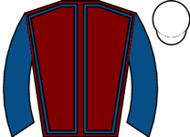 Under The Radar ◆ 2 M2 ★ EYE | 4.50 | - | 3 | 6-9-3-3-5-6 | 1r | trk✓ | 60 ↓ | 93 | ★★★★☆ | Led, ridden 2f out, kept on inside final furlong, headed last 110yds, no extra near finish |
| 0 |  Black Missile ◆ 3 ★ EYE Black Missile ◆ 3 ★ EYE | 5.00 | - | 1 | 4-5-5-3-6-6 | 2r | trk✓ | 60 ↓ | 95 | ★★★★☆ | Midfield, ridden and not clear run after 2f out, kept on inside final furlong, no danger |
| 0 | 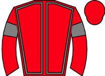 Go Victor | 9.00 | - | 5 | 12-11-9-1-3-11 | trk✓ | 57 ↓ | 93 | ★★★☆☆ | Midfield, pushed along 2f out, soon short room and held, eased final furlong | |
| 0 | 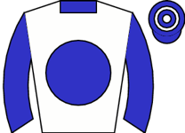 Dinamo | 11.00 | - | 2 | 4-1-4-9-4-7 | 1r | trip✓ | 50 | 90 | ★★☆☆☆ | Chased leader, ridden and hampered 2f out, weakening when hampered again over 1f out |
| 0 | 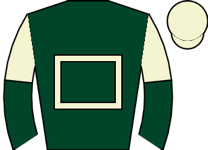 Sparkling Wine | 13.00 | - | 4 | 2-5-2-4-10-15 | 2r 1p | trip✓ trk✓ | 45 | 87 | ★★☆☆☆ | Led far side group early, headed before halfway, pushed along over 2f out, outpaced and we |
| Res | Horse | Price | BSP | Dr | Form | Crse | Suit | OR | Spd | TF | Last comment |
|---|---|---|---|---|---|---|---|---|---|---|---|
| 0 | 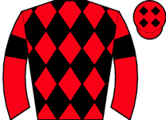 Misunderstood ⚠ draw ⚠ ground | 4.00 | - | 6 | 7-7-4-5-2-2 | 1r 1p | trip✓ trk✓ | 81 | 101 | ★★★★★ | Front mid-division behind clear leader, pushed along over 2f out and closed, chased leader |
| 0 | 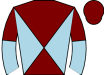 Supreme Clarets ◆ 1 M2 ★ EYE | 4.50 | - | 1 | 9-2-2-4-1-1 | 1r 1W | going✓ trip✓ trk✓ | 73 ↑ | 100 | ★★★★☆ | Prominent, ridden and headway to lead over 1f out, ran on strongly inside final furlong, c |
| 0 | 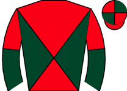 Mr King ⚠ ground | 6.00 | - | 10 | 16-6-7-1-8-5 | trip✓ draw✓ | 77 | 90 | ★★★☆☆ | Towards rear, headway on outside from 1f out, never on terms with leaders | |
| 0 | 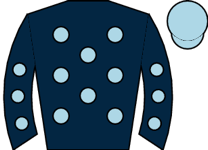 Count Palatine ⚠ ground | 8.00 | - | 3 | 10-3-14-6-1-6 | 1r | trip✓ | 81 | 98 | ★★★★☆ | Mid-division, pushed along well over 2f out, no progress |
| 0 | 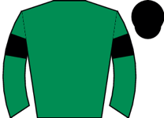 This Farh ◆ 3 ▲ cls | 9.00 | - | 2 | 6-1-4-1-4-5 | 2r 1W | going✓ trip✓ trk✓ | 74 ↑ | 90 | ★★★☆☆ | Led, pushed along when headed 2f out, weakened quickly inside final furlong |
| 0 |  Cotai Eye Joe Cotai Eye Joe | 11.00 | - | 8 | 3-3-1-12-4 | trip✓ trk✓ draw✓ | 74 | 91 | ★★★★☆ | Rear mid-division, headway 2f out and pushed along, went third over 1f out, stayed on, not | |
| 0 | 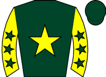 Coolree ⚠ draw ▲ cls | 13.00 | - | 5 | 6-2-4-3-7-3 | 4r 3p | trip✓ trk✓ | 66 | 92 | ★★★☆☆ | Midfield, ridden over 2f out, headway and plugged on well inside final furlong, took third |
| 0 | 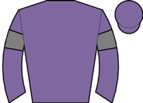 Vixey ◆ 2 | 17.00 | - | 9 | 8-2-12-3-5-4 | trip✓ trk✓ draw✓ | 77 | 98 | ★★★☆☆ | Led, shaken up 2f out, ridden and headed over 1f out, weakened inside final furlong | |
| 0 |  Yanifer Yanifer | 17.00 | - | 7 | 9-12-14-4-10-12 | draw✓ | 82 ↓ | 91 | ★★☆☆☆ | Taken down early, anticipated the start and accelerated the gate, soon led, pushed along a | |
| 0 | 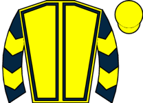 Mythical Phoenix ⚠ draw | 21.00 | - | 4 | 8-8-8-11-6-5 | 75 ↓ | 92 | ★★☆☆☆ | Went to post early, mid-division, pushed along 3f out, weakened 1f out |
| Res | Horse | Price | BSP | Dr | Form | Crse | Suit | OR | Spd | TF | Last comment |
|---|---|---|---|---|---|---|---|---|---|---|---|
| 0 |  Tattie Bogle ◆ 3 ★ EYE ⚠ draw ▲ cls Tattie Bogle ◆ 3 ★ EYE ⚠ draw ▲ cls | 3.50 | - | 6 | 2-7-2-2-8-1 | 3r 1p | trip✓ trk✓ | 77 | 90 | ★★★★★ | Midfield, ridden and headway over 2f out, led over 1f out, kept on well inside final furlo |
| 0 |  Obelix M2 Obelix M2 | 6.00 | - | 9 | 1-5-5-13-4-4 | 1r | trip✓ draw✓ | 80 | 95 | ★★★☆☆ | Rear mid-division, pushed along and closed over 2f out, went third over 1f out and ridden, |
| 0 | 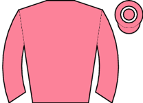 Style Of Life M2 ⚠ draw ⚠ ground ▲ cls | 6.00 | - | 5 | 1-2-5-21-11-2 | 1r 1p | trk✓ | 75 | 93 | ★★★★☆ | Wore hood and went early to post, mounted in chute, led, ridden over 2f out, headed inside |
| 0 | Glenfinnan ◆ 1 ▼ cls | 8.00 | - | 3 | 9-4-2-12-1-8 | 2r 1W | trip✓ trk✓ | 82 | 88 | ★★★★☆ | Went early to post, took keen hold, tracked leaders, ridden and lost position 2f out, soon |
| 0 | 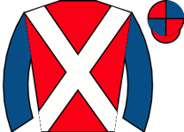 Folkene ▲ cls | 9.00 | - | 8 | 6-4-10-4-7-4 | draw✓ | 67 ↓ | 93 | ★★★★☆ | Midfield, headway and waiting for room over 2f out, ridden over 1f out, kept on same pace | |
| 0 |  Star Material ⚠ ground Star Material ⚠ ground | 11.00 | - | 2 | 11-9-8-3---13 | 80 | 91 | ★★☆☆☆ | Very slowly away and tailed off in rear throughout | ||
| 0 | Light Speed | 11.00 | - | 7 | 6-5-3-8-9-4 | trk✓ draw✓ | 72 | 85 | ★★★☆☆ | Mounted in chute and went early to post, handy in second, led 3f out, pushed along 2f out, | |
| 0 | 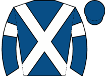 Mudamer ◆ 2 | 13.00 | - | 1 | 3-3-11-6-3-7 | 1r | 78 | 96 | ★★☆☆☆ | Raced towards rear, ridden over 2f out, soon tailed off | |
| 0 | 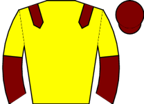 Nursia ⚠ draw | 15.00 | - | 4 | 5-1-5-8 | 76 | 92 | ★★☆☆☆ | Dwelt, towards rear, pushed along over 2f out, never a factor |
| Res | Horse | Price | BSP | Dr | Form | Crse | Suit | OR | Spd | TF | Last comment |
|---|---|---|---|---|---|---|---|---|---|---|---|
| 0 | 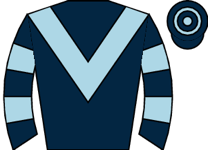 Buckland Belle ◆ 3 ★ EYE | 3.50 | - | 6 | 2-2-1-3-2-1 | trip✓ trk✓ draw✓ | 63 ↑ | 86 | ★★★★☆ | Made most, soon led, faced challenge inside final 110yds, ran on well, gamely held on | |
| 0 | 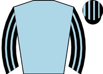 Amber Hamur ◆ 2 M2 ⚠ draw | 4.00 | - | 9 | 4-6-2-1-1-3 | 1r 1p | trip✓ trk✓ | 65 ↑ | 90 | ★★★★☆ | Soon raced in close second, pressed leader over 1f out, lost one place inside final furlon |
| 0 |  Dalamara Dalamara | 5.00 | - | 1 | 2-4-6-4-1-3 | going✓ trip✓ trk✓ | 60 ↓ | 87 | ★★★☆☆ | In touch with leaders, ridden and pressed leader 3f out, briefly disputed lead 2f out, soo | |
| 0 | 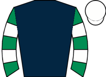 Pilgrim's Progress ▼ cls | 8.00 | - | 5 | 2-2-7-2-8-5 | draw✓ | 65 | 91 | ★★★☆☆ | Slowly away, in rear, pushed along 2f out and switched to outer, ridden and stayed on over | |
| 0 | Only Dream Big ◆ 1 ⚠ draw ▼ cls | 13.00 | - | 10 | 5-6-3-5-2-7 | 62 | 96 | ★★★☆☆ | Prominent, pushed along over 2f out, ridden over 1f out, no impression and weakened inside | ||
| 0 | 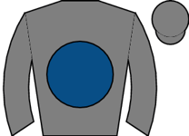 Snaafy | 17.00 | - | 2 | 3-5-2-9-5-9 | trip✓ trk✓ | 61 | 90 | ★★★☆☆ | Soon led, ridden over 2f out, headed and weakened over 1f out, | |
| 0 |  Blue Mantle ⚠ draw ▼ cls Blue Mantle ⚠ draw ▼ cls | 21.00 | - | 11 | 3-2-5-11-6 | 65 | 88 | ★★☆☆☆ | Held up in midfield, ridden over 3f out, kept on same pace over 1f out | ||
| 0 | 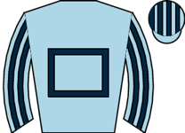 Elizabetty ▼ cls | 21.00 | - | 4 | 7-1-3-9-10-10 | draw✓ | 64 | 92 | ★★☆☆☆ | Reared and veered left from stalls, always behind, never a factor, ridden over 2f out, wea | |
| 0 | 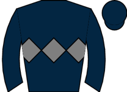 Turtle Reef ▼ cls | 21.00 | - | 3 | 6-5-12-3-7-8 | 65 | 86 | ★★★☆☆ | Wore hood to post, towards rear, headway over 3f out, ridden 2f out, no further progress | ||
| 0 | 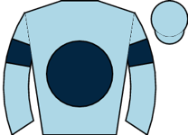 Itszaboy ⚠ draw | 21.00 | - | 8 | 6-6-5-2-5-8 | 2r | trip✓ | 50 ↓ | 86 | ★★☆☆☆ | Prominent, soon raced in second, pushed along over 1f out, outpaced inside final furlong, |
| 0 |  Horwich Horwich | 26.00 | - | 7 | 6-12-6---2-9 | going✓ trip✓ trk✓ draw✓ | 59 | 90 | ★★★★★ | In rear, badly hampered 2f out and lost all chance |
⚠ limited form — likely skip
| Res | Horse | Price | BSP | Dr | Form | Crse | Suit | OR | Spd | TF | Last comment |
|---|---|---|---|---|---|---|---|---|---|---|---|
| 3 | 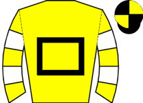 Kiwi De Cotte ◆ 1 ▼ cls | 1.83 | - | --1-3-1-5 | trk✓ | 117 | 71 | ★★★★★ | Tracked leaders, lost position before 3 out where not fluent, ridden after 3 out, soon bea | ||
| 2 | Passengerontheship ◆ 2 ▼ cls | 3.50 | - | 1-1-1-1-5-7 | trip✓ trk✓ | 108 ↑ | 76 | ★★★☆☆ | Took keen hold, briefly pressed for lead before 3rd, joined 9th, ridden before 3 out, head | ||
| 1 | 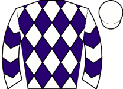 In The Trenches ◆ 3 | 4.33 | - | 5-2-1---4-7 | 112 | - | ★★★☆☆ | Towards rear, headway to 6th halfway, pushed along before 3 out, ridden and kept on one pa |
| Res | Horse | Price | BSP | Dr | Form | Crse | Suit | OR | Spd | TF | Last comment |
|---|---|---|---|---|---|---|---|---|---|---|---|
| 5 | 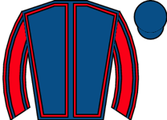 Malinas Glory ★ EYE ▼ cls ⚠ IRE form | 2.75 | - | 1---7-11-10-1 | 1r 1W | trk✓ | 95 ↓ | 64 | ★★★★★ | Disputed lead, led 4th, pushed along before 2 out and forged on, ridden before last where | |
| 3 | 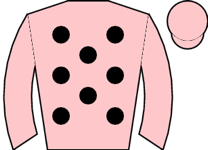 Culligran M2 | 3.75 | - | 4-3-7-2-4-4 | trip✓ | 84 | 50 | ★★★☆☆ | Prominent, pressed leader after 4 out, pushed along 3 out, led 2 out, headed approaching l | ||
| 2 | 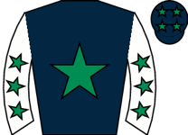 Saint Arion ◆ 2 ▼ cls | 4.00 | - | 19-4-6-4 | 97 | 62 | ★★★☆☆ | Close up, led 2nd, headed after 4th, tracked leaders, soon pushed along, lost ground 4 out | |||
| 0 | 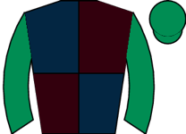 Ballinoulart ◆ 3 | 7.50 | - | 3---2-5---3 | going✓ | 69 | 56 | ★★★☆☆ | Led, pushed along before 3 out and faced challenge, headed 2 out, ridden and no extra run- | ||
| 0 | Bravethewaves ◆ 1 | 21.00 | - | 4-7-1-7-5-11 | trk✓ | 85 ↑ | 71 | ★★★☆☆ | Close up, tracked leaders 4th, lost ground 7th, towards rear and soon tailed off | ||
| 1 | King Of The Story | 21.00 | - | 4-2---7---- | 2r 1p | trip✓ trk✓ | 74 ↓ | 68 | ★★★☆☆ | Towards rear, hit 6th, improved to dispute third after 10th, lost ground and not fluent 11 | |
| 4 | Est Illic ⚠ ground | 21.00 | - | ----3-3-10-7 | trk✓ | 76 ↑ | 41 | ★★☆☆☆ | Led, pushed along and headed before 2 out, weakened after 2 out |
⚠ limited form — likely skip
| Res | Horse | Price | BSP | Dr | Form | Crse | Suit | OR | Spd | TF | Last comment |
|---|---|---|---|---|---|---|---|---|---|---|---|
| 1 |  Sixpack ◆ 2 ▼ cls Sixpack ◆ 2 ▼ cls | 2.20 | - | 3-1-1-4-2-3 | going✓ trk✓ | 74 | ★★★☆☆ | Wore hood to post, led, shaken up over 2f out, ridden and headed over 1f out, no extra ins | |||
| 2 | Tralee Girl ◆ 1 | 2.38 | - | 7-3-2-4-2-1 | going✓ trip✓ trk✓ | 115 ↑ | 69 | ★★★★★ | Made all, two lengths ahead 2 out, soon ridden and drifted right, extended advantage appro | ||
| 0 | Bath Taverness ◆ 3 ★ EYE | 5.50 | - | 10-5-1 | going✓ | 74 | ★★★☆☆ | Took keen hold, made all, ridden over 2f out, edged left over 1f out, kept on well inside | |||
| 3 | Esther Spring ▲ cls | 26.00 | - | 8-6-7 | 59 | ★★☆☆☆ | Mid-division, pushed along well over 2f out, weakened 1f out | ||||
| 0 | Happy Harrison | 67.00 | - | 7-10-5-9 | 40 | ★☆☆☆☆ | Took keen hold, midfield, not fluent 3rd, ridden and weakened before 3 out |
| Res | Horse | Price | BSP | Dr | Form | Crse | Suit | OR | Spd | TF | Last comment |
|---|---|---|---|---|---|---|---|---|---|---|---|
| 0 | Ki Woo ◆ 1 ★ EYE ▼ cls | 2.75 | - | 2---1-5-1-2 | going✓ trip✓ trk✓ | 133 ↑ | 74 | ★★★☆☆ | Prominent, outpaced 14th, ridden along after 4 out, made no impression on leaders 2 out, r | ||
| 0 |  Dunkerque ◆ 2 M2 Dunkerque ◆ 2 M2 | 3.00 | - | 1-1-1-2-1-2 | going✓ trk✓ | 132 ↑ | 70 | ★★★☆☆ | Tracked sole rival, slightly hampered 9th, closed 11th, led 4 out, pushed along 3 out and | ||
| 0 | Snipe ▼ cls | 4.50 | - | 1-4-1-6-2-4 | going✓ trip✓ trk✓ | 126 ↑ | 60 | ★★★☆☆ | Held up in rear, ridden before 3 out, outpaced 2 out, minor headway run-in | ||
| 0 | Fever Dream ◆ 3 | 6.00 | - | 5-5-4-2-1-5 | 1r 1W | trk✓ | 112 ↑ | 73 | ★★★★★ | Held up in touch, progress after 15th, improved into third after 4 out, asked for effort a |
| Res | Horse | Price | BSP | Dr | Form | Crse | Suit | OR | Spd | TF | Last comment |
|---|---|---|---|---|---|---|---|---|---|---|---|
| 0 | Guts And Glory ◆ 1 ▼ cls | 2.25 | - | 2-2-5-1 | going✓ trip✓ trk✓ | 101 | 66 | ★★★★☆ | Prominent, not fluent 3 out, going well 2 out, ridden to lead before last, went clear flat | ||
| 0 | Jammy Jay ◆ 2 M2 | 4.33 | - | 3-4-8-2-4-2 | trk✓ | 98 | 57 | ★★★★★ | Led, headed and tracked leader after 1st, slow 3rd, pressed leader 3 out, soon led, ridden | ||
| 0 | Ballylicky Bay | 5.00 | - | 3-8-5-5-3-2 | 1r | trk✓ | 86 | 55 | ★★★☆☆ | Midfield, short of room when closing on leaders 3 out, took second before 2 out, ridden be | |
| 0 | Blackwater Lilly ◆ 3 | 6.50 | - | 4-4-4-6-4-3 | 94 ↓ | 63 | ★★★☆☆ | Held up towards rear, headway after 2 out, ridden and progress to go second before last, n | |||
| 0 | Miracles Do Happen ⚠ ground | 21.00 | - | 12-6-1-8---8 | trk✓ | 94 | 53 | ★★☆☆☆ | Soon in touch on outside, led briefly before 6th, lost place before 2 out | ||
| 0 | Barafundle Bay | 21.00 | - | 4-4-4-7-8-11 | 78 ↑ | 47 | ★★☆☆☆ | Towards rear, outpaced and dropped to last 5th, lost touch before 3 out, | |||
| 0 | Cappa Lass | 26.00 | - | 6-7-8-- | 78 | 62 | ★★☆☆☆ | Held up in rear, detached after 7th, pulled up after 8th | |||
| 0 | Lady Bee Great ⚠ ground | 67.00 | - | 8-6-12---8-9 | 89 ↓ | 50 | ★★☆☆☆ | Mid-division, ridden to chase leaders after 2 out, strongly ridden and weakened quickly on |
| Res | Horse | Price | BSP | Dr | Form | Crse | Suit | OR | Spd | TF | Last comment |
|---|---|---|---|---|---|---|---|---|---|---|---|
| 0 | Lacrima ◆ 3 ▲ cls | 3.00 | - | 8-8-4-5-1-4 | 1r | 108 ↓ | 62 | ★★★★★ | Prominent on outer, pushed along after 4 out, ridden and weakened tamely 2 out | ||
| 0 |  Back In The Bay ◆ 2 M2 Back In The Bay ◆ 2 M2 | 3.75 | - | 1-3-7-5-2-- | going✓ trk✓ | 106 ↓ | 69 | ★★★★☆ | Wore hood to post, tracked leaders, dropped to last after 4 out, soon pushed along and bea | ||
| 0 | Belles Benefit ◆ 1 ▼ cls | 5.00 | - | 5-6-8-1-3-5 | 1r | trk✓ | 105 ↑ | 69 | ★★★☆☆ | Took keen hold, led, pressed for lead 2 out, soon headed and ridden, weakened run-in | |
| 0 | Prince De Juilley | 6.50 | - | 1-2-2-4-6-5 | going✓ trip✓ trk✓ | 106 ↑ | 46 | ★★☆☆☆ | Prominent, shaken up to lead before 3 out, ridden and headed before 2 out, faded approachi | ||
| 0 | Pipers Cross ▲ cls | 6.50 | - | 3-5-3-3-4-5 | 1r | trk✓ | 98 | 46 | ★★☆☆☆ | Disputed lead to 2nd, dropped to rear after 4th, pushed along and struggling 8th, no chanc |
| Res | Horse | Price | BSP | Dr | Form | Crse | Suit | OR | Spd | TF | Last comment |
|---|---|---|---|---|---|---|---|---|---|---|---|
| 1 | Virtual Rock ◆ 3 | 3.50 | - | 1-2-1-12-8-1 | going✓ trk✓ | 107 | 79 | ★★★★★ | Took keen hold, chased leaders, led 4th, not fluent 3 out, driven when not fluent last, ke | ||
| 2 | Goodwin Face ◆ 1 M2 ▼ cls | 4.00 | - | 3-2-2-1-1-9 | going✓ trip✓ trk✓ | 112 ↑ | 70 | ★★★☆☆ | Mid-division, some headway on outside 2 out, never able to get on terms, well held from la | ||
| 3 | Tilehurst ◆ 2 ★ EYE | 4.33 | - | 3-2-4-5-1-2 | going✓ trk✓ | 110 ↑ | 62 | ★★★★☆ | Handy, lost position after 4 out, improved before 3 out where disputed second, pushed alon | ||
| 5 |  Arbitration Arbitration | 4.50 | - | 5-1-4-8-2-2 | going✓ trk✓ | 105 | 63 | ★★★☆☆ | Midfield, took second and closed on leader before 3 out, disputed lead before last, every | ||
| 4 | Sun Joy ▼ easy trk | 8.00 | - | 2-4-1-2-7-2 | 4r 2p | going✓ trip✓ trk✓ | 105 ↑ | 70 | ★★★☆☆ | Raced in second throughout, mistake 5th, pushed along before 6th, briefly led 3 out, mista |
| Res | Horse | Price | BSP | Dr | Form | Crse | Suit | OR | Spd | TF | Last comment |
|---|---|---|---|---|---|---|---|---|---|---|---|
| 3 | Jet Smart ◆ 2 | 3.00 | - | 5-5-4-2-2-2 | going✓ trip✓ trk✓ | 114 | 60 | ★★★☆☆ | Chased leaders, moved into second 4 out, pushed along 3 out, ridden run-in, not quite pace | ||
| 1 | Tapley M2 | 3.25 | - | 4-2-3-1-3-4 | trk✓ | 120 ↑ | 57 | ★★★☆☆ | Went to post early, chased leaders, not fluent 2nd and lost position, tracked front pair 6 | ||
| 2 | Lermoos Legend ◆ 1 ▼ easy trk | 4.00 | - | 6-2-7-3-2-2 | going✓ trip✓ trk✓ | 113 | 83 | ★★★★☆ | Held up in rear, headway to chase leaders after 3 out, stayed on from 2 out to take second | ||
| 4 | American Land ◆ 3 ▼ cls | 5.00 | - | 1-1-4-4-2-- | going✓ trk✓ | 112 | 66 | ★★★★★ | Raced in second, dropped to third when not fluent 4th, pushed along and lost third before |
⚠ limited form — likely skip
| Res | Horse | Price | BSP | Dr | Form | Crse | Suit | OR | Spd | TF | Last comment |
|---|---|---|---|---|---|---|---|---|---|---|---|
| 0 |  Causing Problems ▲ cls Causing Problems ▲ cls | 2.38 | - | 6-6-8-5-9 | 86 | ★★★☆☆ | Slowly away, towards rear, raced keenly, some headway on inner over 4f out, outpaced over | ||||
| 0 | Ollierob ◆ 3 | 3.75 | - | unraced | - | ||||||
| 0 | Royal Sapphire ⚠ ground | 5.50 | - | 11-10-7-10-12-3 | - | ★★★☆☆ | Dwelt and towards rear, ridden into 5th under 2f out, moderate 3rd over 1f out, kept on sa | ||||
| 0 | Rum Diamond ◆ 1 | 7.00 | - | 5-8-10-11-2 | 1r 1p | going✓ trip✓ trk✓ | 78 | ★★★★☆ | Bumped 1st, chased leaders on outer, moved into second before 2 out, kept on but no chance | ||
| 0 | Houndswood Willow ⚠ ground | 15.00 | - | 16-11-7-5-10-3 | 1r 1p | trk✓ | 69 | ★★☆☆☆ | Tracked leaders, went second before 4 out, ridden and weakened before 2 out | ||
| 0 | Janteloven ◆ 2 | 17.00 | - | unraced | - |
| Res | Horse | Price | BSP | Dr | Form | Crse | Suit | OR | Spd | TF | Last comment |
|---|---|---|---|---|---|---|---|---|---|---|---|
| 0 | Starshine Legend ★ EYE ▲ cls | 2.62 | - | 7-6-3-5-7-1 | going✓ trk✓ | 105 ↑ | 63 | ★★★★★ | Rear mid-division, smooth headway after 4 out, pushed along into fourth 3 out, chased lead | ||
| 0 | Motazzen ◆ 1 M2 ★ EYE | 4.00 | - | 1-8-4-9-3-1 | 4r 2W | going✓ trip✓ trk✓ | 106 | 82 | ★★★★☆ | Prominent, pressed leader 3 out, going okay and led 2 out, soon pushed along, not fluent l | |
| 0 |  Siam Park ◆ 2 Siam Park ◆ 2 | 5.50 | - | 4-2-----2-3 | going✓ trk✓ | 112 | 64 | ★★★☆☆ | Chased leader until pressed leader after 5th, not fluent 4 out, led 3 out, ridden before 2 | ||
| 0 | Atreides ⚠ ground ▲ cls | 8.00 | - | 6-3-5-3-13-3 | 2r 2p | trk✓ | 94 ↓ | 67 | ★★★☆☆ | Took keen hold, pressed leader, awkward 1st, slow 2nd, disputed lead before 3 out, briefly | |
| 0 | Prairie Diamond ◆ 3 | 13.00 | - | --4-3-7-1-- | going✓ trk✓ | 103 ↑ | 55 | ★★☆☆☆ | Led, not fluent 1st, raced keenly and soon went six lengths clear, mistake 6th, headed on | ||
| 0 | Bright Legend ⚠ ground | 13.00 | - | 3-1-17-5-7-8 | trk✓ | 108 ↓ | 74 | ★★☆☆☆ | Soon led, headed over 3f out, weakened over 2f out | ||
| 0 | Getaway With You ⚠ ground ▲ cls | 17.00 | - | 5-1-4-4-5-7 | trk✓ | 94 | 62 | ★★★★☆ | Took keen hold, pressed leader, led 4th, headed and ridden before 3 out, in touch 2 out, w |
| Res | Horse | Price | BSP | Dr | Form | Crse | Suit | OR | Spd | TF | Last comment |
|---|---|---|---|---|---|---|---|---|---|---|---|
| 0 | Flashy Boy ◆ 1 ▲ cls | 2.10 | - | 3---5-3-1-2 | going✓ trip✓ trk✓ | 81 | 71 | ★★★★★ | Held up in rear, bad mistake 15th, still plenty to do when making headway 3 out, took thir | ||
| 0 | Yes Day ◆ 2 M2 ▼ easy trk | 3.75 | - | 8---2-3-2-4 | going✓ trk✓ | 107 | 63 | ★★★★☆ | Handy, led after 2nd, headed after 8th, tracked leader, pushed along before 4 out, weakene | ||
| 0 | Balkardy ⚠ ground | 5.00 | - | 6-----7---2 | trip✓ trk✓ | 103 ↓ | 63 | ★★★☆☆ | In rear, headway 13th, went second after 14th, bad mistake 17th, kept on but no impression | ||
| 0 | Ballynaheer ◆ 3 ▼ easy trk ▼ cls | 6.50 | - | 1-1-4-1-5-5 | 1r | going✓ trip✓ trk✓ | 106 ↑ | 44 | ★★★☆☆ | Led, pushed along and headed before 2 out, soon weakened |
⚠ limited form — likely skip
| Res | Horse | Price | BSP | Dr | Form | Crse | Suit | OR | Spd | TF | Last comment |
|---|---|---|---|---|---|---|---|---|---|---|---|
| 0 | Midnight Pass ◆ 1 ▼ cls | 4.33 | - | 3-4---4---3 | 1r | trk✓ | 91 ↓ | 63 | ★★★☆☆ | Towards rear, mid-division 4th, mistake 4 out, not fluent 3 out and pushed along, stayed o | |
| 0 | Lucky In Taipan ◆ 2 | 5.00 | - | --6-13-6-3-- | trk✓ | 72 | 73 | ★★★★★ | Held up in rear, mistake 8th, detached 3 out, pulled up before 2 out | ||
| 0 | Winston's Oath ⚠ ground ▲ cls | 6.00 | - | 9-7-4-4-6-7 | 78 ↓ | 80 | ★★★★☆ | Led, ridden when pressed 3f out, headed over 2f out, every chance over 1f out, weakened in | |||
| 0 | Lady Fortune | 7.00 | - | 5---1-4-1-10 | going✓ trk✓ | 83 ↑ | 52 | ★★★★☆ | Took keen hold, led, not fluent 3rd, headed next, not fluent 5th, pushed along before 3 ou | ||
| 0 | Guinness Lad ◆ 3 ▼ easy trk ▲ cls | 9.00 | - | 5-2-1-3-8-4 | trk✓ | 78 | 81 | ★★★☆☆ | Pulled hard, mid-division, headway over 2f out, rider lost whip over 1f out, lost third an | ||
| 0 | No Mean Feat | 11.00 | - | 3-4---4-6-4 | 3r 1p | trk✓ | 73 ↓ | 67 | ★★★☆☆ | Midfield, ridden and every chance 2 out, soon chased winner, faded run-in, lost third fina | |
| 0 | Callero | 11.00 | - | 6-7-8-9-9-5 | 74 | 75 | ★★★☆☆ | Raced in third, dropped to last 3 out, never threatened | |||
| 0 | Hawa Jumeirah ⚠ ground | 13.00 | - | 5-5-8-3-3-6 | 1r | trk✓ | 77 | 77 | ★★★☆☆ | In touch with leaders, pushed along after 3 out, weakened approaching 2 out, soon lost tou | |
| 0 | Bacardi Blue ▼ cls | 13.00 | - | 5-6-3-3 | trk✓ | 68 | 46 | ★★★☆☆ | Held up in rear, mistake and briefly outpaced 4th, pushed along before 3 out, lost ground | ||
| 0 | Major Major ⚠ ground | 51.00 | - | 5-7-5-7-9-8 | 75 ↓ | 52 | ★★☆☆☆ | Prominent on outer, pushed along and dropped away 3 out |
⚠ limited form — likely skip
| Res | Horse | Price | BSP | Dr | Form | Crse | Suit | OR | Spd | TF | Last comment |
|---|---|---|---|---|---|---|---|---|---|---|---|
| 0 |  Flight Tracker ◆ 1 ▼ cls Flight Tracker ◆ 1 ▼ cls | 2.75 | - | 6 | 2-2 | trip✓ | 84 | 92 | Midfield, pushed along over 2f out, headway 1f out, short of room on far side rail final 1 | ||
| 0 |  My Boy ⚠ draw My Boy ⚠ draw | 3.75 | - | 1 | 4 | 88 | Tracked leaders, green and edged left 2f out, stayed on same pace inside final furlong | ||||
| 0 | Wilcox Bridge | 4.50 | - | 8 | unraced | draw✓ | - | ||||
| 0 | Anahona ◆ 2 | 6.00 | - | 4 | 5 | 95 | Mid-division, ridden over 2f out, went fifth when edged left and no headway over 1f out, n | ||||
| 0 |  Ayuq ⚠ draw Ayuq ⚠ draw | 8.50 | - | 2 | 9 | 83 | Went right and bumped rival start, slowly away, in rear, ran green and wandered early, out | ||||
| 0 | Yoshark ⚠ draw | 9.00 | - | 3 | unraced | - | |||||
| 0 | Lady Ranya ◆ 3 ▼ cls | 15.00 | - | 5 | 6 | 90 | Wore hood to post, took keen hold, held up in rear, ridden over 2f out, minor headway over | ||||
| 0 | Rogue Inferno | 15.00 | - | 7 | unraced | - | |||||
| 0 | Yellow Vision ⚠ hard trk | 21.00 | - | 9 | 4 | draw✓ | 92 | Wore hood to post, midfield, ridden and outpaced 3f out, no impression until stayed on nea | |||
| 0 | Formby George | 51.00 | - | 11 | unraced | draw✓ | - | ||||
| 0 | Northern Exposure ⚠ hard trk ⚠ ground ▲ cls | 51.00 | - | 10 | 8 | draw✓ | 83 | Slowly away, always towards rear |
| Res | Horse | Price | BSP | Dr | Form | Crse | Suit | OR | Spd | TF | Last comment |
|---|---|---|---|---|---|---|---|---|---|---|---|
| 0 | Londoner ◆ 1 | 3.75 | - | 8 | 9-5-4-2-4-2 | going✓ trip✓ trk✓ draw✓ | 87 | 91 | ★★★★★ | Mid-division, improved 2f out, soon pushed along, ridden and pressed leaders 1f out, kept | |
| 0 |  Kalokalo M2 ⚠ draw ▼ cls Kalokalo M2 ⚠ draw ▼ cls | 5.00 | - | 3 | 3-1-2-1-3-13 | 1r 1W | going✓ trip✓ trk✓ | 78 ↑ | 90 | ★★★☆☆ | Wore hood to post, took keen hold, midfield, bumped and lost position after 2f, never a fa |
| 0 |  Shipbourne ◆ 3 ▼ cls Shipbourne ◆ 3 ▼ cls | 7.00 | - | 9 | 1-3-1-13-9 | draw✓ | 87 | 84 | ★★☆☆☆ | In touch with leaders, ridden and lost position 3f out, weakened 2f out | |
| 0 | Talis Evolvere ▼ cls | 9.00 | - | 7 | 2-7-6-6-5-10 | trip✓ | 78 ↓ | 91 | ★★★☆☆ | In rear of mid-division, outpaced and ridden over 2f out, soon kept on same pace, never a | |
| 0 | Firefall ▼ cls ⚠ FR form | 11.00 | - | 4 | 1-9-8-2-7 | going✓ trip✓ | 86 | 100 | ★★☆☆☆ | Led, joined 3f out, ridden and headed over 2f out, weakened over 1f out | |
| 0 |  Darn Hot Gallop Darn Hot Gallop | 13.00 | - | 6 | 1-1-17-17-6-5 | going✓ trip✓ | 83 | 90 | ★★★★☆ | Prominent, led 2f out, ridden when headed over 1f out, soon weakened | |
| 0 |  Illy's Roo Illy's Roo | 13.00 | - | 10 | 7-1-5-4-9-9 | trip✓ draw✓ | 75 | 96 | ★★☆☆☆ | Slowly away, held up in rear, ridden 3f out, some headway 2f out, kept on final furlong, n | |
| 0 | Clouds Hill ⚠ draw ⚠ ground | 13.00 | - | 1 | 1-3-9-11-8-7 | 82 | 89 | ★★☆☆☆ | Prominent, pushed along when outpaced before halfway, weakened over 1f out | ||
| 0 | Politely | 15.00 | - | 5 | 9-5-1-1-5-9 | going✓ trip✓ trk✓ | 84 | 91 | ★★☆☆☆ | Mid-division, ridden and weakened quickly 2f out | |
| 0 | Carron ⚠ draw | 15.00 | - | 2 | 6-1-14-8-2-11 | 1r | going✓ trip✓ | 86 | 95 | ★★☆☆☆ | Midfield, short of room 2f out, dropped to rear and asked for effort over 1f out, soon wel |
| 0 |  King Of Fury ◆ 2 King Of Fury ◆ 2 | 21.00 | - | 11 | 4-7-1-1-9-10 | 3r 2W | going✓ trk✓ draw✓ | 78 ↑ | 94 | ★☆☆☆☆ | Went early to post, prominent, ridden 2f out, soon weakened |
| Res | Horse | Price | BSP | Dr | Form | Crse | Suit | OR | Spd | TF | Last comment |
|---|---|---|---|---|---|---|---|---|---|---|---|
| 0 |  Hot And Cold ◆ 1 ★ EYE Hot And Cold ◆ 1 ★ EYE | 3.25 | - | 7 | 6-1-1-2-5-1 | 1r 1W | going✓ trip✓ trk✓ | 85 | 92 | ★★★★★ | Tracked leaders, pushed along and led over 1f out, stayed on well, always doing enough |
| 0 |  Assiri Heights M2 Assiri Heights M2 | 6.00 | - | 10 | 9-6-2 | 1r | going✓ trip✓ draw✓ | 75 | 91 | ★★★☆☆ | Chased leaders, pushed along well over 1f out, ridden and ran on inside final furlong, wen |
| 0 |  Moving Shadow ◆ 3 Moving Shadow ◆ 3 | 6.50 | - | 6 | 1-7-3 | 82 | 93 | ★★★☆☆ | Got warm and sweated up badly in preliminaries, led, set modest pace, joined 1f out, ridde | ||
| 0 | Winston's Warrior | 7.00 | - | 4 | 3-1-8-5-6-2 | 1r 1W | going✓ trk✓ | 80 | 93 | ★★★★☆ | Chased leaders, challenged over 1f out, every chance inside final furlong, held towards fi |
| 0 | On The River ⚠ draw | 9.00 | - | 3 | 5-2-7-5-3-2 | trip✓ trk✓ | 79 | 94 | ★★★☆☆ | Front mid-division, pushed along well over 2f out, went fourth approaching final furlong, | |
| 0 | Storm Point | 11.00 | - | 5 | 4-1-6-1-7-5 | going✓ trip✓ | 77 ↑ | 91 | ★★★☆☆ | Towards rear, steady headway on far side from over 2f out, ridden over 1f out, weakened in | |
| 0 | Date Line ◆ 2 ⚠ draw ▼ cls | 17.00 | - | 1 | 2-1-2-6 | trip✓ | 83 | 90 | ★★☆☆☆ | Prominent, ridden over 1f out, weakened final furlong | |
| 0 | Shimmy Jimmy ⚠ IRE form | 17.00 | - | 8 | 2-1-4-6-2-2 | going✓ draw✓ | 84 | - | ★★☆☆☆ | Led early, headed after 2f and raced prominently, 2nd travelling well 2f out, soon pushed | |
| 0 |  Vincent Rocks ⚠ draw ▼ cls Vincent Rocks ⚠ draw ▼ cls | 21.00 | - | 2 | 20-3-10-2-5-11 | going✓ trip✓ trk✓ | 81 | 95 | ★★☆☆☆ | Took keen hold, midfield, pressed leader after 1f, led and ridden 2f out, headed over 1f o | |
| 0 | Home Hero | 21.00 | - | 11 | 1-5-1-7-4-7 | trip✓ draw✓ | 79 ↑ | 88 | ★★☆☆☆ | Led, ridden and headed 2f out, weakened 1f out | |
| 0 | Duke's Command ⚠ ground ▼ cls | 21.00 | - | 9 | 8-7-6-5-14-8 | draw✓ | 87 ↓ | 93 | ★★★☆☆ | Chased leaders, switched left over 2f out and pushed along, faded 1f out |
⚠ limited form — likely skip
| Res | Horse | Price | BSP | Dr | Form | Crse | Suit | OR | Spd | TF | Last comment |
|---|---|---|---|---|---|---|---|---|---|---|---|
| 0 | News | 3.00 | - | 5 | unraced | - | |||||
| 0 | Connie Sachs ⚠ draw | 3.25 | - | 3 | unraced | - | |||||
| 0 | Ma Blushin Rosie ◆ 1 ▼ cls | 5.00 | - | 8 | 3-5 | draw✓ | 94 | Rear mid-division, headway over 2f out, ridden over 1f out, kept on, never threatened | |||
| 0 | Orfilia | 8.00 | - | 6 | 4-8 | 90 | Took keen hold, prominent, pushed along 2f out, ridden and weakened over 1f out | ||||
| 0 | Keithaar ◆ 3 | 11.00 | - | 4 | unraced | - | |||||
| 0 | Mystic Unicorn ⚠ draw ⚠ ground | 13.00 | - | 2 | 9-5-5 | 58 | 90 | ★★★☆☆ | Took keen hold, led, shaken up over 2f out, ridden over 1f out, headed inside final furlon | ||
| 0 |  Shaqra Queen ◆ 2 ⚠ draw ▼ cls Shaqra Queen ◆ 2 ⚠ draw ▼ cls | 26.00 | - | 1 | 6-4 | 87 | Took keen hold, prominent, ridden and dropped to last over 2f out, minor headway inside fi | ||||
| 0 |  Lady Nenaz ⚠ ground ▼ cls Lady Nenaz ⚠ ground ▼ cls | 101.00 | - | 9 | 9-7 | draw✓ | 92 | Took keen hold, midfield, ridden over 2f out, soon weakened | |||
| 0 | Little Copper ⚠ ground | 101.00 | - | 10 | 12 | draw✓ | 87 | Took keen hold in rear, always behind | |||
| 0 |  Mohangel ⚠ ground Mohangel ⚠ ground | 101.00 | - | 7 | 11-9 | draw✓ | 82 | Wore hood and went to post early, very slowly into stride, detached in rear throughout |
| Res | Horse | Price | BSP | Dr | Form | Crse | Suit | OR | Spd | TF | Last comment |
|---|---|---|---|---|---|---|---|---|---|---|---|
| 0 |  Afraj ★ EYE Afraj ★ EYE | 5.00 | - | 6 | 1-3-3-4-1 | going✓ trip✓ | 78 | 94 | ★★★★☆ | Towards rear, switched left and headway 2f out, ridden and ran on strongly from over 1f ou | |
| 0 | Miss Lady Grace M2 | 5.50 | - | 8 | 2-1-7-6-1-1 | going✓ trip✓ trk✓ | 77 ↓ | 91 | ★★☆☆☆ | Tracked leaders, smooth progress into second 1f out, shaken up to lead final 110yds, ran o | |
| 0 |  Merry ◆ 1 ⚠ draw Merry ◆ 1 ⚠ draw | 6.00 | - | 1 | 3-4-5-2-1-2 | 1r | going✓ trip✓ trk✓ | 79 | 97 | ★★★★☆ | Held up behind leaders, ridden to lead over 1f out, headed well inside final furlong |
| 0 | Inside Story ◆ 2 ★ EYE | 7.00 | - | 7 | 7-5-4-8-2-2 | going✓ trip✓ trk✓ | 82 | 95 | ★★★★★ | Steadied and slow away, held up towards rear, took keen hold, not much room briefly 2f out | |
| 0 | Handle With Care ★ EYE | 8.00 | - | 10 | 6-1-3-4-7-1 | 1r | going✓ trip✓ draw✓ | 76 | 92 | ★★☆☆☆ | Made all, ridden over 1f out, kept on well |
| 0 |  Town Queen ◆ 3 Town Queen ◆ 3 | 9.00 | - | 9 | 2-2-2-1-7 | 1r 1W | going✓ trip✓ trk✓ draw✓ | 75 | 92 | ★★☆☆☆ | Soon raced in second, pushed along over 2f pout, outpaced over 1f out, soon dropped to las |
| 0 | Chantelle | 11.00 | - | 12 | 1-1-2-2-3-5 | 2r 1p | going✓ trip✓ trk✓ draw✓ | 79 | 91 | ★★☆☆☆ | Led, pushed along 2f out, headed approaching final furlong, faded |
| 0 | Bami ⚠ draw ▲ cls | 15.00 | - | 2 | 4-3-1-4-1-2 | 1r 1p | going✓ trip✓ trk✓ | 75 | 94 | ★★★☆☆ | Chased leader, ridden over 2f out, headway to briefly lead over 1f out, soon outpaced by w |
| 0 | Patricia R ⚠ draw ▼ cls | 21.00 | - | 4 | 1-2-1-10 | trip✓ | 78 | 92 | ★★☆☆☆ | Held up in rear, driven 2f out, no impression | |
| 0 |  Bella Bisbee ⚠ ground ▲ cls Bella Bisbee ⚠ ground ▲ cls | 21.00 | - | 11 | 10-2-8-3-6-6 | trip✓ draw✓ | 69 | 89 | ★★☆☆☆ | Took keen hold, prominent, led over 2f out, soon headed and short of room when carried lef | |
| 0 |  Enola Grey Enola Grey | 26.00 | - | 5 | 6-6-8-11-10-6 | 1r | 68 ↓ | 91 | ★★☆☆☆ | Towards rear, pushed along over 2f out, no progress | |
| 0 | Lope El Fuego ⚠ draw ⚠ ground | 34.00 | - | 3 | 1-3-10-9-9-11 | trk✓ | 72 ↓ | 94 | ★☆☆☆☆ | Wore hood to post, midfield, ridden over 2f out, soon weakened |
| Res | Horse | Price | BSP | Dr | Form | Crse | Suit | OR | Spd | TF | Last comment |
|---|---|---|---|---|---|---|---|---|---|---|---|
| 0 | Koffee And Kale ◆ 1 ★ EYE | 3.75 | - | 11 | 5-7-4-6-4-2 | going✓ trk✓ | 60 ↓ | 93 | ★★★★★ | Chased leaders, ridden over 1f out, ran on well final furlong, not reach winner | |
| 0 | My Mate Mackley ◆ 2 M2 | 4.33 | - | 4 | 4-2-1-3-2-4 | going✓ trip✓ | 53 ↑ | 92 | ★★★★☆ | Soon prominent, pushed along 2f out, chased leaders inside final furlong, hung left when p | |
| 0 |  Torbados Torbados | 7.00 | - | 12 | 12-5-4-6-2-4 | 57 ↓ | 90 | ★★☆☆☆ | Raced freely, led, pushed along and headed over 2f out, ridden 2f out, no extra inside fin | ||
| 0 | Stoneacre Joe ◆ 3 ▼ cls | 9.00 | - | 9 | 8-4-5-4-3-3 | 57 ↓ | 89 | ★★☆☆☆ | Prominent, pushed along well over 3f out, kept on, faded 1f out | ||
| 0 | Long Shot | 9.00 | - | 13 | 2-4-11-4-7-5 | trip✓ | 46 ↓ | 90 | ★★★☆☆ | In touch with leaders far side, took second in group 1f out, lost one position inside fina | |
| 0 |  La Belle Forest ▼ cls La Belle Forest ▼ cls | 11.00 | - | 7 | 1-7-6-6-4-7 | 3r 1W | going✓ trk✓ | 60 ↓ | 95 | ★★★☆☆ | Wore red hood to post, took a fierce hold behind leaders early, pushed along well over 1f |
| 0 | Imagine That ⚠ ground | 11.00 | - | 2 | 7-10-5-5-4-5 | 54 | 90 | ★★★☆☆ | Led, ridden and headed over 1f out, weakened inside final furlong, lost three places towar | ||
| 0 | Overbudget | 17.00 | - | 10 | 8-3-7-6-9-8 | 57 ↓ | 92 | ★★☆☆☆ | Went to post early in hood, prominent, ridden to press leader 2f out, soon briefly led, we | ||
| 0 | Deadline | 21.00 | - | 14 | 6-6-5-4-5 | 60 | 91 | ★★★☆☆ | Wore hood to post, held up in rear, ridden along 2f out, steady headway over 1f out, edged | ||
| 0 |  Mister Moet ⚠ ground Mister Moet ⚠ ground | 21.00 | - | 1 | 2-4-4-5-7-9 | 54 ↓ | 91 | ★★☆☆☆ | Chased leaders, ridden over 1f out, weakened 1f out | ||
| 0 | Audere ★ EYE ⚠ ground | 21.00 | - | 3 | 6-6-8-6-4-6 | 1r | 45 ↓ | 90 | ★★☆☆☆ | Prominent, shaken up over 3f out, pressed leader over 1f out, kept on inside final furlong | |
| 0 | Whazzimo ⚠ ground | 21.00 | - | 6 | 5-9-9-9 | 1r | 51 | 89 | ★★★☆☆ | Took keen hold, chased leaders, ridden along and weakened quickly over 2f out | |
| 0 |  Music And Song ⚠ hard trk ⚠ ground Music And Song ⚠ hard trk ⚠ ground | 34.00 | - | 8 | 12-4-5-8-9-6 | 45 ↑ | 88 | ★★☆☆☆ | Towards rear, ridden over 1f out, no headway | ||
| 0 | Independent Angel ⚠ ground | 51.00 | - | 5 | 4-10-12-4-7-10 | 1r | 45 | 88 | ★★☆☆☆ | Always towards rear |
| Res | Horse | Price | BSP | Dr | Form | Crse | Suit | OR | Spd | TF | Last comment |
|---|---|---|---|---|---|---|---|---|---|---|---|
| 0 | Edwardtheninth | 3.75 | - | 8 | 9-4-5-1-3-1 | 2r 1W | going✓ trip✓ trk✓ | 58 | 75 | ★★★☆☆ | Held up in last, went fourth over 3f out, pushed along 2f out, led over 1f out, went clear |
| 0 | Fabled Spirit ◆ 2 M2 | 4.00 | - | 2 | 11-8-10-3-2-1 | going✓ trk✓ | 58 | 80 | ★★★★☆ | Led, pressed over 2f out, hung right over 1f out, stayed on final furlong | |
| 0 | Last Flight ◆ 3 | 5.00 | - | 4 | 7-7-5-3-3-1 | trip✓ trk✓ | 57 | 86 | ★★★★★ | Tracked leaders, went second over 2f out, ridden to press leader over 1f out, led final fu | |
| 0 | Lady Of Clover ◆ 1 ★ EYE | 6.00 | - | 3 | 3-1-4-3-1-4 | going✓ trk✓ | 59 ↑ | 93 | ★★★☆☆ | Chased leaders, switched right over 2f out, kept on inside final furlong | |
| 0 |  Head Girl ⚠ ground Head Girl ⚠ ground | 7.00 | - | 1 | 7-9-3-9-1-2 | trk✓ | 57 ↑ | 78 | ★★★☆☆ | Prominent, led halfway, pushed along over 2f out, ridden over 1f out, stayed on, headed 11 | |
| 0 | Further Measure ⚠ ground | 17.00 | - | 9 | 4-4-7-5-6-5 | 2r | 57 ↓ | 80 | ★★☆☆☆ | Towards rear, ridden over 3f out, soon faded | |
| 0 | Sir Griflet ⚠ ground ▼ cls | 21.00 | - | 10 | 6-10-12-4-3-3 | 54 ↓ | 80 | ★★★★☆ | Soon raced in third throughout, outpaced from 2f out, kept on one pace from 1f out | ||
| 0 |  Rogue Desire ⚠ ground ▼ cls Rogue Desire ⚠ ground ▼ cls | 34.00 | - | 6 | 3-5-7-5-5 | 1r | trk✓ | 57 | 85 | ★★★☆☆ | Chased leaders, last after 2f, ridden over 3f out, soon weakened |
| 0 | Galahad Threepwood ⚠ ground | 34.00 | - | 5 | 6-3-7-7-8-6 | 45 ↓ | 80 | ★★☆☆☆ | Towards rear, pushed along over 3f out, soon no impression, plugged on to pass beaten riva | ||
| 0 |  Stopherandgo ⚠ ground ▼ cls Stopherandgo ⚠ ground ▼ cls | 51.00 | - | 7 | --9-12-7-4-6 | 45 ↓ | 69 | ★★☆☆☆ | Prominent, led after 2f, pushed along when headed over 3f out, ridden over 2f out, soon we |
| Res | Horse | Price | BSP | Dr | Form | Crse | Suit | OR | Spd | TF | Last comment |
|---|---|---|---|---|---|---|---|---|---|---|---|
| 0 |  Courageous Sioux ★ EYE ▼ cls ⚠ 2 runs Courageous Sioux ★ EYE ▼ cls ⚠ 2 runs | 2.00 | - | 3 | 5-1 | trip✓ trk✓ | 71 | 90 | Held up in behind leaders, went second going okay over 1f out, ridden to lead inside final | ||
| 0 | Hanney Girl ◆ 3 M2 | 5.50 | - | 7 | 3-9-9-4-4-2 | trip✓ | 71 ↓ | 96 | ★★★★☆ | Led, joined halfway, pushed along 2f out, led approaching final furlong, ridden and headed | |
| 0 |  Dance Of Angels ▼ cls Dance Of Angels ▼ cls | 8.00 | - | 4 | 3-4-5 | 1r | 70 | 94 | ★★★☆☆ | Pressed leader, ridden over 1f out, weakened final 110yds | |
| 0 |  Managing Director ◆ 1 ▼ cls Managing Director ◆ 1 ▼ cls | 11.00 | - | 6 | 1-8-5-3-2-11 | trip✓ | 73 | 96 | ★★★★★ | Led narrowly, headed well over 2f out, plugged on same pace | |
| 0 | Goyard | 11.00 | - | 1 | 3-8-4-5-7-6 | trk✓ | 74 ↓ | 95 | ★★☆☆☆ | Raced in last, switched left for clear run and headway over 1f out, soon ridden, faded tow | |
| 0 | Brazilian Belle ◆ 2 ▼ cls | 13.00 | - | 2 | 7-3-1-1-6-16 | 3r 1W | going✓ trip✓ trk✓ | 72 | 96 | ★★★☆☆ | Dwelt and shifted right start, mid-division, pushed along over 2f out, weakening when not |
| 0 |  Rogue Bullet ▼ cls Rogue Bullet ▼ cls | 13.00 | - | 5 | 5-1-4-3-2-8 | trip✓ | 75 | 93 | ★★☆☆☆ | In touch with leaders, ridden over 2f out, weakened over 1f out |
| Res | Horse | Price | BSP | Dr | Form | Crse | Suit | OR | Spd | TF | Last comment |
|---|---|---|---|---|---|---|---|---|---|---|---|
| 0 | Urchin ◆ 1 ★ EYE | 5.00 | - | 2 | 3-1-2 | trip✓ trk✓ | 85 | 89 | ★★★☆☆ | Unseated rider behind stalls, soon led, pulled hard and headed when veered left on first b | |
| 0 |  Solarize ◆ 2 M2 ▲ cls Solarize ◆ 2 M2 ▲ cls | 6.00 | - | 7 | 5-3-1-1-5-2 | 1r | going✓ trip✓ trk✓ | 86 | 96 | ★★★★☆ | Chased leaders, briefly outpaced 4f out, pushed along over 3f out, ridden and headway over |
| 0 | Cliff Danger M2 ★ EYE ▲ cls | 6.00 | - | 5 | 6-4-7-9-1 | 3r 1W | going✓ trip✓ trk✓ | 76 | 92 | ★★★★☆ | Front mid-division, pushed along well over 3f out, moved into fourth 3f out, ridden over 2 |
| 0 | Golden Knight | 6.50 | - | 4 | 4-1-6-12-1-3 | trk✓ | 89 | 91 | ★★★★★ | Led, increased advantage over 4f out, reduced lead over 2f out, soon pushed along, headed | |
| 0 | Assail ▲ cls | 8.00 | - | 8 | 2-6-6-4-3-2 | 3r 1p | going✓ trip✓ trk✓ | 83 | 90 | ★★★☆☆ | Held up in midfield, not clear run after 2f out, ridden and switched left over 1f out, kep |
| 0 | Tryfan ▲ cls | 9.00 | - | 9 | 9-2-11-7-1-5 | going✓ trip✓ trk✓ | 83 | 80 | ★★★☆☆ | Mounted in chute, wore hood to post, held up in touch, ridden over 1f out, no impression | |
| 0 | Topteam | 11.00 | - | 10 | 7-1-5-2-12-7 | going✓ trip✓ | 90 | 92 | ★★★☆☆ | Took keen hold, midfield, ridden over 2f out, some headway entering final furlong, no furt | |
| 0 |  Nolton Cross ⚠ ground ▲ cls Nolton Cross ⚠ ground ▲ cls | 13.00 | - | 6 | 13-8-9-5-2-5 | 85 ↓ | 90 | ★★★☆☆ | Wore hood to start, prominent, tracked clear leaders after 3f, led over 1f out, ridden whe | ||
| 0 |  Fierce Fortitude ◆ 3 ▼ cls Fierce Fortitude ◆ 3 ▼ cls | 15.00 | - | 3 | 2-1-2-1-3-11 | going✓ trk✓ | 89 ↑ | 93 | ★★★☆☆ | Wore hood to post, midfield, ridden along over 3f out, weakened over 2f out | |
| 0 | The Green Mile ★ EYE | 21.00 | - | 1 | 5-11-1-3-1-7 | going✓ | 87 ↑ | 92 | ★★★☆☆ | Slowly into stride, held up towards rear, stayed on inside final 110 yards, never nearer |
Decision support, not betting advice. Prices are forecast/early —
check the live market. Speed figures are final-time only (no sectionals), so weigh
them with your own read on how a race was run.